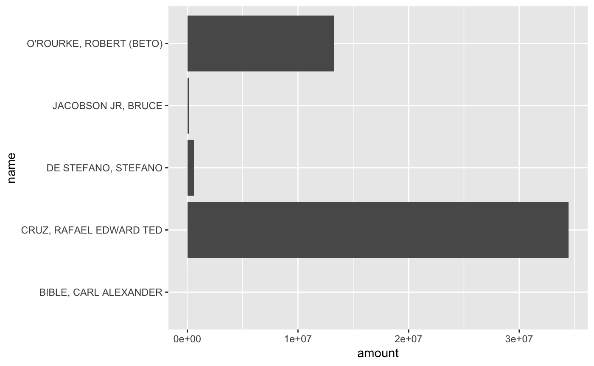
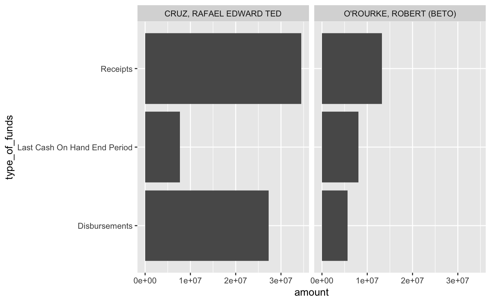

tidyusafec is an R package for accessing campaign finance data through the Federal Election Commission’s OpenFEC API. It depends on having R installed (windows | mac), and suggests you also install the integrated development environment RStudio if you are just beginning with R. tidyusafec is an independent open source project under MIT license maintained by Stephen Holzman. It is not affiliated with or endorsed by the FEC or any of the other software projects mentioned.
Depending on where R packages are hosted, you can install them from inside R with functions. Use install.packages to get the devtools package from CRAN. Use install_github to get tidyusafec from the Github repository.
install.packages("devtools")
devtools::install_github("stephenholzman/tidyusafec")Load packages:
library(tidyverse)## ── Attaching packages ──────────────────────────────────────────────────────────── tidyverse 1.2.1 ──## ✔ ggplot2 2.2.1.9000 ✔ purrr 0.2.4
## ✔ tibble 1.4.2 ✔ dplyr 0.7.4
## ✔ tidyr 0.8.0 ✔ stringr 1.3.1
## ✔ readr 1.1.1 ✔ forcats 0.3.0## ── Conflicts ─────────────────────────────────────────────────────────────── tidyverse_conflicts() ──
## ✖ dplyr::filter() masks stats::filter()
## ✖ dplyr::lag() masks stats::lag()library(tidyusafec)## Warning: replacing previous import 'magrittr::set_names' by
## 'purrr::set_names' when loading 'tidyusafec'tidyusafec makes it easy to send requests to the FEC website’s API for data. Some of the functions can realistically trigger thousands of requests spread out over several minutes. Check your email for an API key and substitute it for YOUR_API_KEY inside these quotes:
save_datagov_apikey(key = "YOUR_API_KEY")Running this saves the API Key on your machine so tidyusafec functions can use it automatically.
By default, the FEC limits individuals to 1000 requests every hour. This is probably enough for general use like:
200 candidate-by-election searches leading to 800 requests for an individual candidate’s financial totals per hour
100,000 itemized contributions per hour.
If you see yourself going over that limit, you can send APIinfo@fec.gov a request for their 120 calls per minute upgrade.
search_candidates is the most common way to begin an analysis. An example search might look like:
va_05_house <- search_candidates(state = "VA",
district = "05",
election_year = "2018",
office = "H")## Candidates found: 7## Total Principal Committees associated with these candidates: 7va_05_house## # A tibble: 7 x 31
## . load_date last_file_date candidate_id election_years party
## <list> <chr> <chr> <chr> <list> <chr>
## 1 <list [… 2017-10-16T21… 2017-07-24 H8VA05155 <list [1]> DEM
## 2 <list [… 2017-10-24T21… 2017-07-02 H8VA05148 <list [1]> DEM
## 3 <list [… 2017-05-23T07… 2017-05-16 H6VA05142 <list [2]> REP
## 4 <list [… 2018-01-30T21… 2018-01-29 H8VA05163 <list [1]> DEM
## 5 <list [… 2017-10-01T20… 2017-10-01 H8VA05114 <list [1]> DEM
## 6 <list [… 2017-10-16T21… 2017-05-26 H8VA05130 <list [1]> DEM
## 7 <list [… 2017-09-27T20… 2017-05-17 H8VA05122 <list [1]> DEM
## # ... with 25 more variables: candidate_status <chr>, office_full <chr>,
## # state <chr>, federal_funds_flag <lgl>, has_raised_funds <lgl>,
## # office <chr>, election_districts <list>, name <chr>,
## # district_number <int>, cycles <list>, incumbent_challenge <chr>,
## # party_full <chr>, first_file_date <chr>, active_through <int>,
## # incumbent_challenge_full <chr>, last_f2_date <chr>, district <chr>,
## # principal_committees <list>, committee_id <chr>, committee_name <chr>,
## # treasurer_name <chr>, earliest_cycle <int>, latest_cycle <int>,
## # earliest_election_year <int>, latest_election_year <int>Each row returned by search_candidates contains a unique candidate_id-committee_id pair. Candidates just getting started or not raising money may have no committee_id, and some candidates may have multiple rows if they changed principal committees for different elections.
There are 31 columns of various information, some more noteworthy than others.
va_05_house %>%
select(name, candidate_id, committee_id, committee_name, candidate_status)## # A tibble: 7 x 5
## name candidate_id committee_id committee_name candidate_status
## <chr> <chr> <chr> <chr> <chr>
## 1 COCKBURN, … H8VA05155 C00650366 LESLIE COCKBURN … C
## 2 CULLOP, BE… H8VA05148 C00649020 CULLOP FOR CONGR… C
## 3 GARRETT, T… H6VA05142 C00607101 TOM GARRETT FOR … C
## 4 GAUGHAN, W… H8VA05163 C00667618 VOTEGAUGHAN N
## 5 HUFFSTETLE… H8VA05114 C00637918 FRIENDS OF RD C
## 6 SLATE, ADAM H8VA05130 C00639153 ADAM SLATE FOR C… C
## 7 SNEATHERN,… H8VA05122 C00640698 SNEATHERN FOR CO… CThe functions that get data require these unqiue id variables. candidate_status is a notable column to filter on and be aware of. It goes by FEC status according to records filed and processed, not necessarily what candidates have announced about their intentions.
Some filter strategies are below, or you could use search_candidates better when you know exactly what you are looking for.
#Candidates still actively campaigning based on public announcements.
va_05_house %>%
filter(str_detect(name, "COCKBURN|GARRETT"))
#Candidates who are still current as far as the FEC knows.
va_05_house %>%
filter(candidate_status == "C")
#An alternative search if we know we only want current candidates from the start.
va_05_house <- search_candidates(state = "VA",
district = "05",
election_year = "2018",
office = "H",
candidate_status = "C")The results of a search_candidates can be piped (using %>%) into one of the appropriate functions that begin with a get_ prefix.
As an example, let’s first use search_candidates to find everyone running for the open senate seat in Texas.
texas_senate <- search_candidates(state = "TX",
office = "S",
election_year = "2018",
candidate_status = "C")## Candidates found: 5## Total Principal Committees associated with these candidates: 5texas_senate## # A tibble: 5 x 31
## . load_date last_file_date candidate_id election_years party
## <list> <chr> <chr> <chr> <list> <chr>
## 1 <list [… 2018-05-14T23… 2017-10-23 S8TX00335 <list [1]> IND
## 2 <list [… 2018-05-11T00… 2018-05-09 S2TX00312 <list [2]> REP
## 3 <list [… 2018-02-17T09… 2017-05-23 S8TX00319 <list [1]> REP
## 4 <list [… 2018-02-17T09… 2017-11-16 S8TX00350 <list [1]> REP
## 5 <list [… 2018-02-17T09… 2017-03-31 S8TX00285 <list [1]> DEM
## # ... with 25 more variables: candidate_status <chr>, office_full <chr>,
## # state <chr>, federal_funds_flag <lgl>, has_raised_funds <lgl>,
## # office <chr>, election_districts <list>, name <chr>,
## # district_number <int>, cycles <list>, incumbent_challenge <chr>,
## # party_full <chr>, first_file_date <chr>, active_through <int>,
## # incumbent_challenge_full <chr>, last_f2_date <chr>, district <chr>,
## # principal_committees <list>, committee_id <chr>, committee_name <chr>,
## # treasurer_name <chr>, earliest_cycle <int>, latest_cycle <int>,
## # earliest_election_year <int>, latest_election_year <int>Start by getting financial totals for each candidate.
texas_candidate_totals <- texas_senate %>%
get_candidate_totals()## Getting totals for: S8TX00335## Getting totals for: S2TX00312## Getting totals for: S8TX00319## Getting totals for: S8TX00350## Getting totals for: S8TX00285texas_candidate_totals## # A tibble: 222 x 41
## ..x candidate_id coverage_start_da… full_election coverage_end_date
## <list> <chr> <chr> <lgl> <chr>
## 1 <list … S8TX00335 2017-10-01T00:00:… TRUE 2018-03-31T00:00…
## 2 <list … S2TX00312 2013-01-01T00:00:… TRUE 2018-03-31T00:00…
## 3 <list … S2TX00312 2011-01-01T00:00:… TRUE 2012-12-31T00:00…
## 4 <list … S8TX00319 2017-04-01T00:00:… TRUE 2018-02-14T00:00…
## 5 <list … S8TX00350 2017-11-16T00:00:… TRUE 2018-03-31T00:00…
## 6 <list … S8TX00285 2017-01-01T00:00:… TRUE 2018-03-31T00:00…
## 7 <list … S8TX00335 2017-10-01T00:00:… TRUE 2018-03-31T00:00…
## 8 <list … S2TX00312 2013-01-01T00:00:… TRUE 2018-03-31T00:00…
## 9 <list … S2TX00312 2011-01-01T00:00:… TRUE 2012-12-31T00:00…
## 10 <list … S8TX00319 2017-04-01T00:00:… TRUE 2018-02-14T00:00…
## # ... with 212 more rows, and 36 more variables: last_report_year <int>,
## # cycle <int>, last_report_type_full <chr>,
## # last_beginning_image_number <chr>, type_of_funds <chr>, amount <dbl>,
## # ..y <list>, load_date <chr>, last_file_date <chr>,
## # election_years <list>, party <chr>, candidate_status <chr>,
## # office_full <chr>, state <chr>, federal_funds_flag <lgl>,
## # has_raised_funds <lgl>, office <chr>, election_districts <list>,
## # name <chr>, district_number <int>, cycles <list>,
## # incumbent_challenge <chr>, party_full <chr>, first_file_date <chr>,
## # active_through <int>, incumbent_challenge_full <chr>,
## # last_f2_date <chr>, district <chr>, principal_committees <list>,
## # committee_id <chr>, committee_name <chr>, treasurer_name <chr>,
## # earliest_cycle <int>, latest_cycle <int>,
## # earliest_election_year <int>, latest_election_year <int>The tibbles returned by get_ functions are tidy (except for some list columns that remain while developing the package). This makes it possible to cleanly pipe results into existing tidyverse tools with minimal data wrangling.
texas_candidate_totals %>%
filter(type_of_funds == "receipts") %>%
ggplot() +
geom_bar(aes(x = name, y = amount), stat = "identity") +
coord_flip()
There is also a list available in the package tidyusafec_filters that contain useful vectors to filter on. For example:
texas_candidate_totals %>%
filter(str_detect(name, "CRUZ|BETO"),
type_of_funds %in% tidyusafec_filters$candidate_totals$type_of_funds$top_level) %>%
mutate(type_of_funds = type_of_funds %>%
str_replace_all("_"," ") %>%
str_to_title()
) %>%
ggplot() +
geom_bar(aes(x = type_of_funds, y = amount), stat = "identity") +
facet_wrap(~name) +
coord_flip()